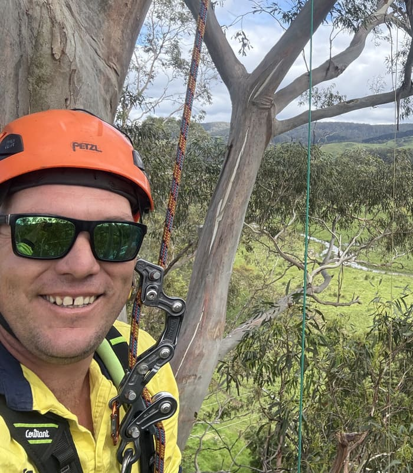

Careers in Arboriculture
If you're interested in arboriculture — or already working in the industry and think you could contribute to Otway Tree Care — we'd love to hear from you. Send us your CV and let's have a chat.
The Benefits of Working With Otway Tree Care
Whether you're starting out or already qualified, here's what you can expect on the Otway Tree Care crew.
Real Qualifications
Train alongside a qualified arborist and pick up genuine skills — climbing, rigging, machine operation — not just labouring.
Modern, Well-Kept Gear
You're not fighting worn-out equipment. We invest in low-impact machinery that's properly maintained, so you can do the job right.
Local Work, Home Every Night
Every job is across Colac, Apollo Bay and the Otways — no long hauls, no weeks away from home.
Small Team, Straight Talk
Family-run and built on honesty. You'll always know where you stand, and your work actually gets noticed.
Room to Grow
Pick up your climbing tickets, learn machine operation, and build a real career in the trade — not just a job.
Safety Done Properly
Full SWMS, proper PPE, and well-maintained gear on every job — no cutting corners, no unnecessary risks.

I started Otway Tree Care to do things properly — safe, skilled, honest work. If you take pride in a job done right, you'll fit in here.
We're Always Keen to Hear From Good People
We don't run a formal job-listing process — if you're into arboriculture, or already working in the industry and think you could add something to our team, just send through your CV. We'd love to have a chat.